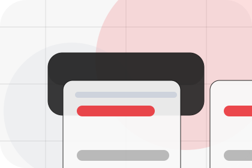
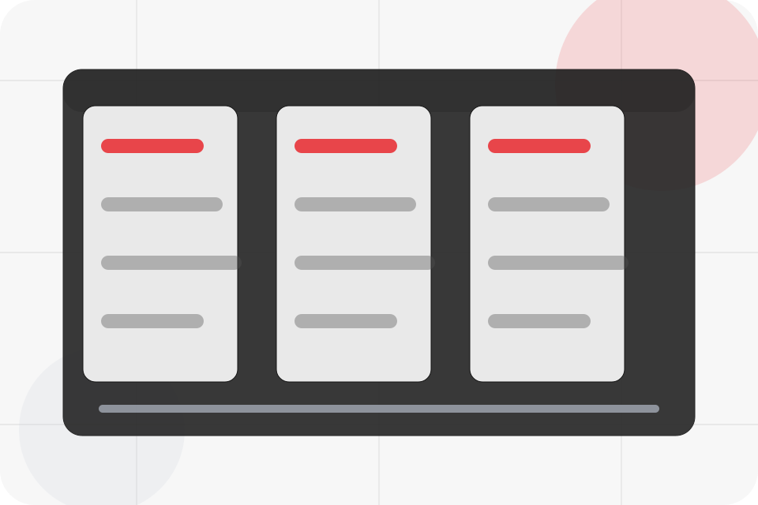
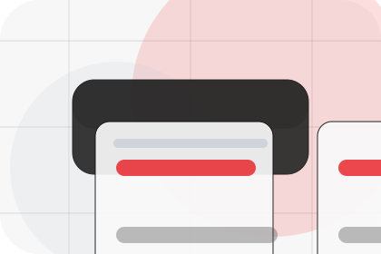
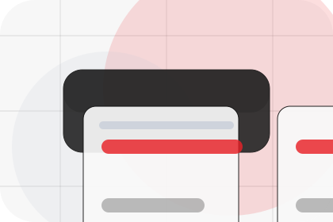
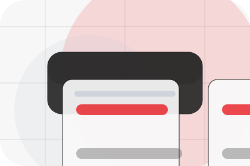
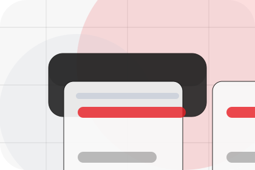
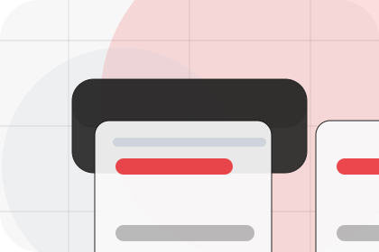
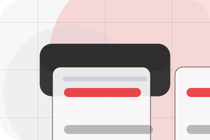
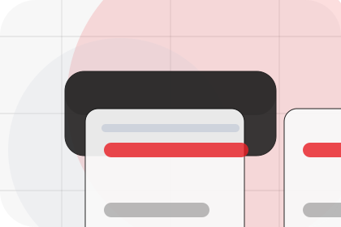
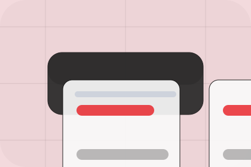

SpecVault guides spec
A useful entry point for visitors who need more context before they calculate savings.
Open resourceResources / 01
Resources opens as a clear energy decision hub: what Vault offers, who it helps, why it matters, and which route to take first.
The first screen combines positioning, proof, primary action, and fast internal navigation, so people can act immediately or compare the rest of the resources route with context.
Centered product hero
Select the closest route and Vault keeps the next step, proof, and follow-up expectation aligned with cost reduction and resilience.

Resources / 02
Guides gives researching visitors a practical route into guides, checklists, and comparison material without leaving the site structure.
Each resource behaves like a useful internal link, giving cold and warm visitors a way to learn, compare, and return to the action path.
View ResourcesA useful entry point for visitors who need more context before they calculate savings.
A scannable comparison aid that makes research usable before the next decision.
A route back to support, services, or contact when the visitor is ready to act.

SpecA useful entry point for visitors who need more context before they calculate savings.
Open resource
ReportA scannable comparison aid that makes research usable before the next decision.
Open resource
PlaybookA route back to support, services, or contact when the visitor is ready to act.
Open resourceResources / 03
Incentives gives researching visitors a practical route into guides, checklists, and comparison material without leaving the site structure.
Each resource behaves like a useful internal link, giving cold and warm visitors a way to learn, compare, and return to the action path.
Explore ResourcesA useful entry point for visitors who need more context before they calculate savings.
A scannable comparison aid that makes research usable before the next decision.
A route back to support, services, or contact when the visitor is ready to act.
Resources / 04
Maintenance explains the operating sequence so visitors can see how the first request becomes a clear recommendation and follow-up.
The steps are written from the visitor side: what they do first, what Vault clarifies, what they receive, and how support continues.
Explore ResourcesHow visitors begin this route and what detail is useful at the first step.
What Vault reviews, filters, or explains before recommending the next move.
What the visitor receives afterward, including support, proof, or a handoff to the next page.
Resources / 05
Solar gives researching visitors a practical route into guides, checklists, and comparison material without leaving the site structure.
Each resource behaves like a useful internal link, giving cold and warm visitors a way to learn, compare, and return to the action path.
Explore ResourcesVault structures solar around guide, checklist, and a clear next route so visitors can compare the block quickly before they calculate savings.
Calculate SavingsResources / 06
Batteries gives researching visitors a practical route into guides, checklists, and comparison material without leaving the site structure.
Each resource behaves like a useful internal link, giving cold and warm visitors a way to learn, compare, and return to the action path.
Explore Resources

A useful entry point for visitors who need more context before they calculate savings.
Resources / 07
Downloads gives researching visitors a practical route into guides, checklists, and comparison material without leaving the site structure.
Each resource behaves like a useful internal link, giving cold and warm visitors a way to learn, compare, and return to the action path.
View ResourcesA useful entry point for visitors who need more context before they calculate savings.

A scannable comparison aid that makes research usable before the next decision.

A route back to support, services, or contact when the visitor is ready to act.
A useful entry point for visitors who need more context before they calculate savings.
Open resourceA scannable comparison aid that makes research usable before the next decision.
Open resourceA route back to support, services, or contact when the visitor is ready to act.
Open resourceResources / 08
Questions handles buying doubts directly so visitors can understand timing, fit, limits, and the safest next step.
Answers are short by design: enough to remove hesitation, not so much that the page turns into documentation before the visitor can act.
Open ContactQuestions gives the page a specific angle instead of repeating the navigation label.
The product output cards show what to compare, what to avoid, and what matters most for energy, power & renewable solutions visitors.

The final cue points to a useful internal route so the section keeps the journey moving.
Vault starts with a focused intake so the recommendation matches the visitor's context, risk, timing, and readiness.
Each route explains inclusions, exclusions, documents, timing, and the decision points that affect final delivery.
The theme uses minimal energy product landing, product output cards, and savings estimator, battery/solar toggle, project output counters rather than a shared template rhythm.
Centered product hero
Select the closest route and Vault keeps the next step, proof, and follow-up expectation aligned with cost reduction and resilience.
Resources / 09
Learn gives researching visitors a practical route into guides, checklists, and comparison material without leaving the site structure.
Each resource behaves like a useful internal link, giving cold and warm visitors a way to learn, compare, and return to the action path.
Explore ResourcesA useful entry point for visitors who need more context before they calculate savings.
A scannable comparison aid that makes research usable before the next decision.
A route back to support, services, or contact when the visitor is ready to act.
Resources / 10
Vault closes the resources route with a clear action, a quick reminder of the value, and a low-friction way to calculate savings.
Visitors who are ready can use the primary action. Visitors who are still comparing can scan the section links, proof, and support routes before they calculate savings.
Calculate SavingsThe final block keeps the choice simple: act now, compare one more proof route, or send enough detail for a focused response.
Calculate Savingscost reduction and resilience
A renewable energy product site with minimalist hero, savings modules, battery/solar cards, and direct calculator. Resources ends with a direct path to calculate savings, plus enough context for visitors who still need to compare.

Calculate SavingsInformation is provided for planning and should be reviewed for the final client, location, and operating rules.